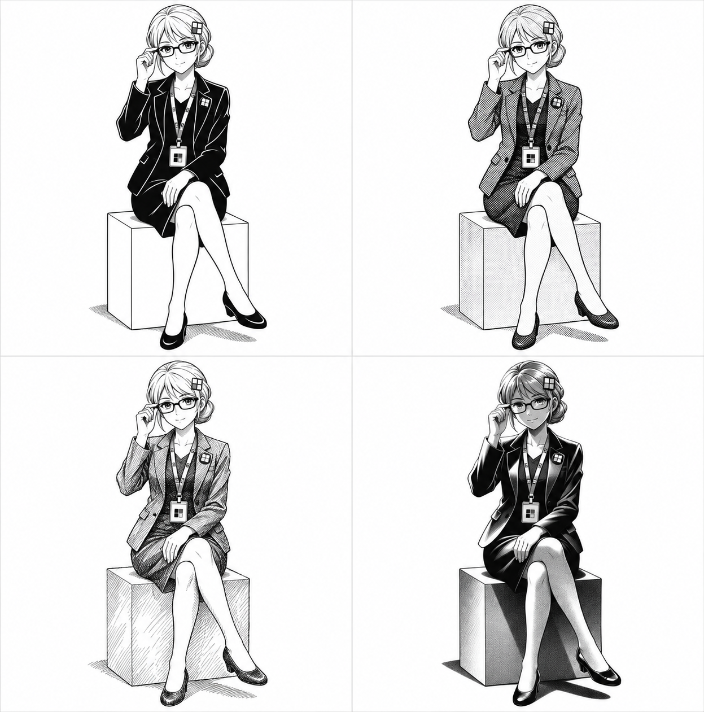
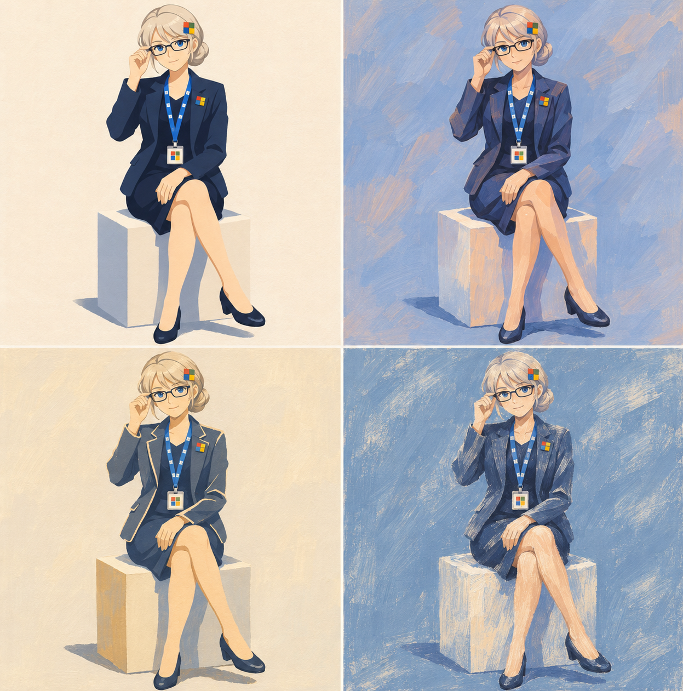

03 / Style study
Microsoft in 32 style studies.
The Matriarch of Office adjusts her glasses in 32 generated portraits. All eight boards use the same seated pose and costume as a reference, so you can compare how each treatment handles edges, light, and texture. Select any board to view it full size.
Anime cel shading
Cel-style shadows divide a form into clear bands of light and dark. Compare the jacket folds across these four portraits to see how much depth can come from a single shadow shape.

- Top left: Classic anime cel
- A few hard-edged tones explain the turn of each sleeve. Grouping the shadows keeps the pose readable at thumbnail size.
- Top right: Soft cel
- Soft transitions inside the shadow shapes round out the knees and jacket. The outline still carries the silhouette.
- Bottom left: Minimal flat cel
- With most modeling removed, the pose depends on silhouette, overlap, and the contrast between the dark suit and white seat.
- Bottom right: High contrast cel
- Large dark shapes make the small highlights count. Look where a bright edge or a break in the shadow separates one form from another.
Manga ink and screentone
Without color, line weight and value carry the likeness. Compare how each treatment separates the glasses, face, and dark suit.

- Top left: Solid blacks
- Reserve white for the lit planes and group the darks into connected shapes. The silhouette stays readable even when the portrait is small.
- Top right: Dot screentone
- A pattern of dots creates a middle gray while the inked contour stays sharp. Denser dots make a darker tone.
- Bottom left: Crosshatching
- Overlapping sets of pen strokes deepen a shadow. Follow the direction of the marks around the sleeves to see how they suggest volume.
- Bottom right: Noir lighting
- Concentrating the highlights around the face and glasses can pull attention away from a suit painted largely in black.
Watercolor
Transparent washes let the paper supply much of the light. Real watercolor spreads on damp paper and holds a firmer edge on dry paper, so moisture helps painters decide what recedes and what stays sharp.

- Top left: Loose watercolor
- The broken marks carry the gesture without tracing every contour. Compare the relatively clear face with the dissolving brushwork around the chair.
- Top right: Controlled watercolor
- Layering washes after earlier passages dry builds darker values with more control. Reserved lights help the white seat stay luminous.
- Bottom left: Ink and watercolor
- The line establishes structure, while the wash supplies color and volume. Look how the glasses remain crisp even where the shading is light.
- Bottom right: Wet-on-wet watercolor
- Color spreading into a damp wash creates diffuse boundaries. The softer shoulders and lower figure draw attention back to the clearer face.
Digital painting
Digital brushes can imitate a smooth glaze, a dry mark, or a textured surface. These variants use different combinations of edge sharpness, brush texture, and lighting.

- Top left: Soft painterly
- Gradual value changes suggest round forms. Keeping the glasses sharper than the surrounding shading gives the eye somewhere to land.
- Top right: Textured digital
- Texture can separate materials even when their colors are similar. It reads best when the broad light and dark shapes are clear underneath it.
- Bottom left: Anime influenced
- Clear outlines and simplified features hold the character design together. Selective blending adds volume to the hair and fabric.
- Bottom right: Cinematic digital
- A dominant light source gives the portrait a clear focal point. A restrained accent along the hair or shoulder helps separate it from darker shapes.
Oil painting
These digital studies emulate oil painting. Their labels describe different things: impasto is about paint thickness, alla prima about how paint is applied, and chiaroscuro about the arrangement of light and dark.

- Top left: Classical oil portrait
- Gentle changes in value and color temperature describe the planes of the face. The strongest edges are reserved for details such as the glasses.
- Top right: Impasto
- In physical impasto, paint stands above the surface and can catch light. Here the simulated ridges make the direction of the brushwork visible.
- Bottom left: Alla prima
- Working directly into paint that is still wet lets neighboring strokes mix at their edges. Look for where a single stroke suggests a fold without outlining it.
- Bottom right: Chiaroscuro
- Grouping much of the portrait into shadow gives the light shapes more weight. The face becomes the focus because it has the strongest local contrast.
Gouache
Opaque paint can cover an earlier color. Compared with the watercolor portraits, look for solid, light paint sitting over darker shapes.

- Top left: Flat color blocks
- Broad navy and cream shapes make the lapels and seat read quickly. The clean joins between shapes do much of the drawing.
- Top right: Warm and cool planes
- Distinct patches of cool blue and warm peach show changes in the direction of the surface. A shift in temperature can describe form alongside a shift in value.
- Bottom left: Limited palette
- Repeat a few mixtures across the jacket, skin, and seat to tie the image together. Look for a light stroke placed over a darker shape.
- Bottom right: Dry brush
- A brush carrying less paint can skip over the paper texture. Broken strokes make the quieter color areas feel less uniform.
Colored pencil
Pencil marks can describe both a surface and its direction. Compare visible stroke layers with dense, smoothed areas and untouched paper.

- Top left: Directional hatching
- Parallel strokes can follow the fall of the hair or the turn of a sleeve. Mark direction helps describe form before the shading gets dark.
- Top right: Crosshatched shadows
- Cross strokes build a darker value and let different hues mingle visually. Indigo and violet can deepen the suit without making it uniformly black.
- Bottom left: Burnished color
- Denser pencil layers and firmer pressure can fill the paper grain. The smoother areas read differently from visible hatch marks.
- Bottom right: Open paper
- Sparse strokes leave the paper visible through the light areas. A few concentrated marks around the glasses and lanyard establish the focal point.
Woodblock-inspired print
A small set of ink shapes has to carry the portrait. Compare which features survive when the emphasis shifts from contours to silhouettes or texture.

- Top left: Four-ink contour
- A dark contour anchors the image while broad blocks of color distinguish the suit, hair, skin, and accents.
- Top right: Two inks and paper
- Indigo and vermilion can divide the scene into cool and warm areas. The exposed paper does the work of a third value.
- Bottom left: Interlocking shapes
- Carved-looking light cuts break up dark masses. Watch how the cube and jacket meet where there is little interior detail.
- Bottom right: Graded ink
- A restrained gradient inspired by bokashi can place the figure in a softer space while the cut contours remain crisp.
Try comparing two portraits
Start with Classic anime cel and the manga Solid blacks study. Look for the cues that still identify Microsoft after the blue and multicolor accents disappear. Compare Minimal flat cel and Chiaroscuro next. Squint at each and follow the largest light and dark shapes. Finally, compare Controlled watercolor with Wet-on-wet watercolor and trace where the jacket edge disappears. These comparisons reveal how value and edge control guide the eye, even before you notice the brush marks.
Further reading from Adobe on cel shading and The Met on watercolor technique and Velázquez’s direct oil brushwork.